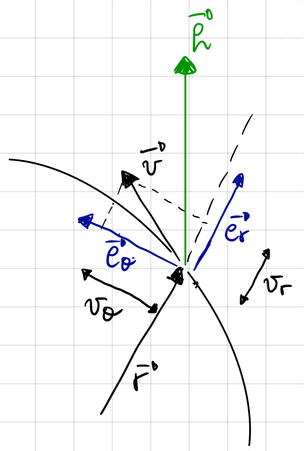
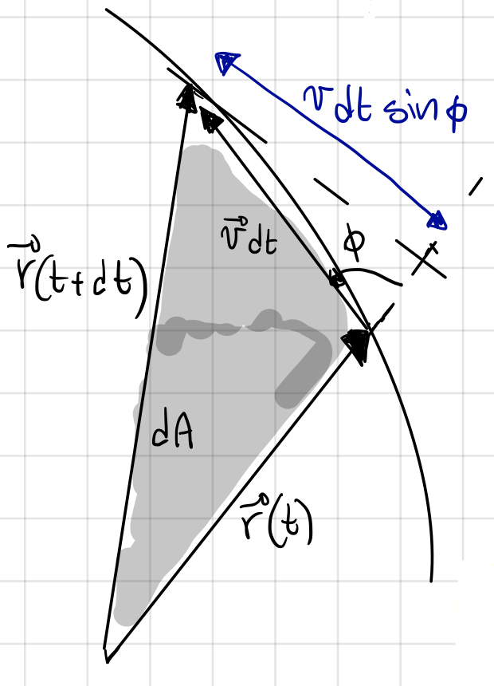
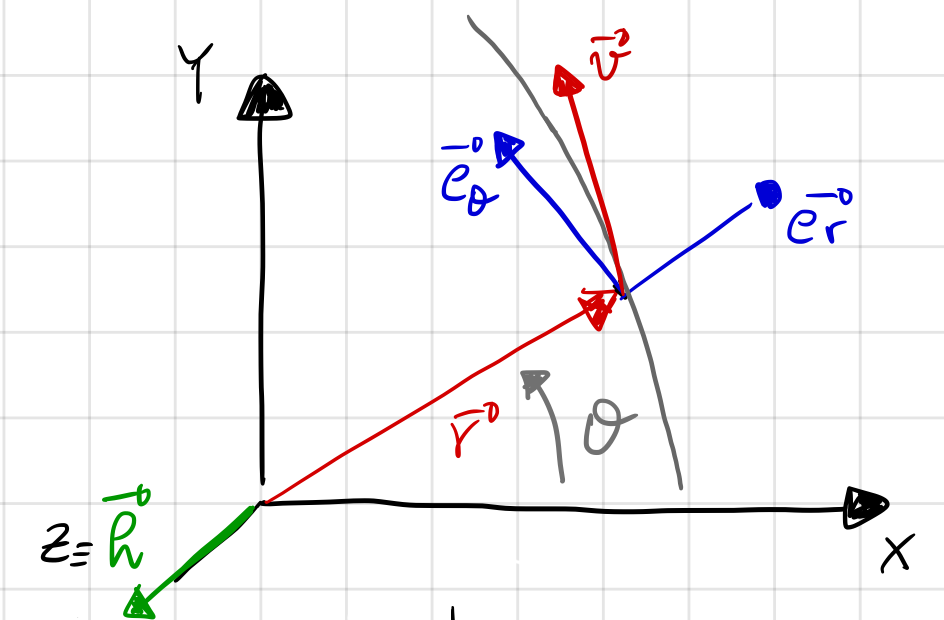
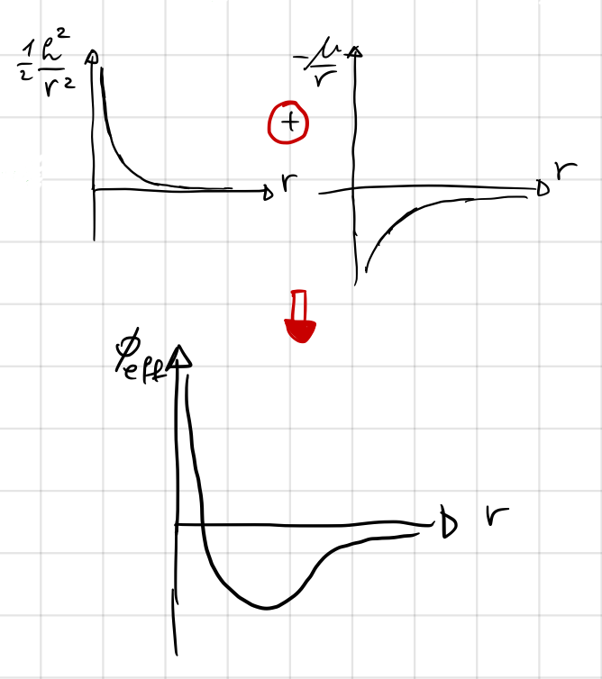
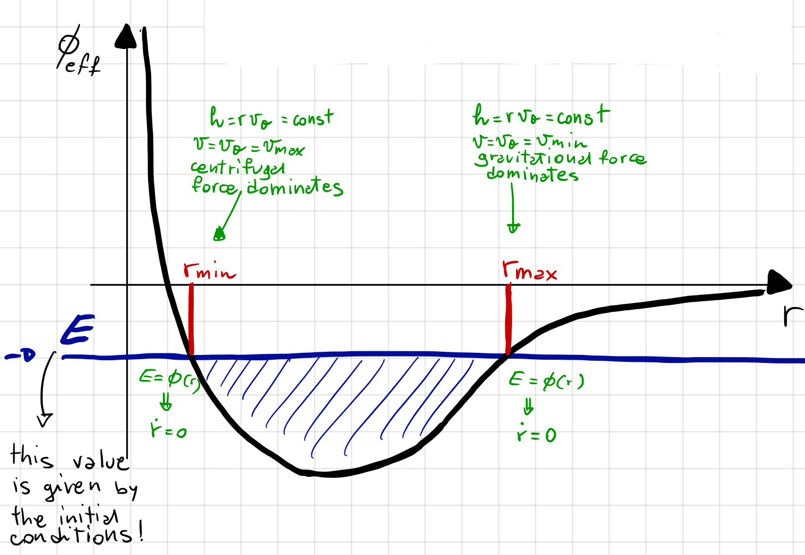
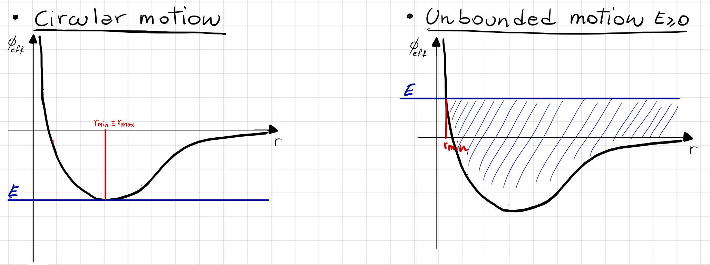

Angular Momentum and Energy#
Prepared by: Ceyda Alan, Emmanuel Airiofolo, Joost Hubbard and Angadh Nanjangud
In this lecture we cover the following topics:
Two-Body Relative Dynamics#
System of 3 scalar second order differential equations
It can be reduced to a system of 6 first order equations
To solve this system we need 6 initial conditions with \(\bf{r_0}\) and \(\bf{v_0}\) as known intial values
The system admits at maximum 6 independent integrals of motion
An Integral of Motion is a function \(f({\bf{r}} , {\bf{v}} , t )\) that is constant for all times, t
The value of the constant is determined by the intial conditions
An integral of motion reduces the degree of freedom of our problem
The Specific Angular Momentum#
The relative angular momentum of \(m_2\) with respect \(m_1\) is
per unit mass gives the specific angular momentum
the time derivative of \(\bf{h}\) is
From the dynamics \(\bf{\ddot r}=-\frac{\mu}{r^3}\bf{r}\), thus;
This result has the following implications:
\({\bf{h}}({\bf{r}} , {\bf{\dot r}} , t)\) = constant.
\(\bf{h}\) is an integral of motion.
All 3 scalar quantities are constants: \(h_x({\bf{r}} , {\bf{\dot r}} , t)\) = constant, \(h_y({\bf{r}} , {\bf{\dot r}} , t)\) = constant, \(h_z({\bf{r}} , {\bf{\dot r}} , t)\) = constant.
Consequences of Specific Angular Momentum = constant#
hence:
Direction

\(\bf{r}\) and \(\bf{v}\) must at all times lie in a plane perpendicular to \(\bf{h}\)
The motion is planar
Magnitude

Kepler’s Second Law: Areal velocity is constant
Kepler’s Second Law#
Polar Coordinates#
If the motion is planar we can use polar coordinates to fully describe it.

In polar coordinates \(\bf{r} = r\bf{e_r}\)
(61) is equivalent to \(\bf{h}\) = constant which is a scalar
Conservation of Specific Orbital Energy: \(E\)#
Take the two-body dynamics and the dot product with \(\bf{\dot r}\);
Note that:
thus;
Notice that this is the derivative of the kinetic energy
In polar coordinates \(v^2={v_r}^2+{v_\theta}^2={\dot r}^2+r^2\dot \theta^2\)
Note that:
thus
Notice that this is the derivative of the potential of the gravotational force
Combining the Derivatives of the Kinetic Energy (65) and Potential of Gravitationl Force (67), we get the Conservation of Specific Orbital Energy (69).
Notice that this is the conservation of specific orbital energy
Admissible Orbital Radius#
\(\frac{1}{2}\frac{h^2}{r^2}-\frac{\mu}{r}\) is the effective potential \(\phi(r)\)
\(\frac{1}{2}\frac{h^2}{r^2}\) is the potential of the contributed force
\(\frac{\mu}{r}\) is the potential gravitational force

The motion is only possible for those values of \(r\) such that \(E\geq\phi_{eff}\)

For \(E<0\) the motion occurs between \(r_{min}-r_{max}\)
For \(E\geq0\) the motion is unbounded
For \(E=min\phi(r), r_{min}=r_{max}\) hence we have a circular orbit

Given initial position \(\bf{r_0}\) and velocity \(\bf{v_0}\) we can
Compute
orbital plane
\(r_0^2\dot \theta_0^2\rightarrow\) Areal velocity
Compute
if \(E<0\) bounded motion and \(E\geq0\) unbounded motion
Compute
when